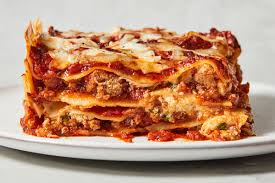

Lasagna recipe

Description
Lasagna is a classic Italian dish made of stacked layers
of wide flat pasta sheets alternated with delicious fillings
such as Bolognese sauce, creamy béchamel sauce, and cheese,
typically mozzarella and Parmesan. It's then baked until
the layers meld together, creating a hearty, comforting
meal that's beloved worldwide.
Ingredients
- Lasagna plates
- Ground beef
- Onion
- Garlic
- Tomato Sauce
- Seasoning
- Ricotta Cheese
- Eggs
- Bechamel sauce
- Olive oil
- Spinach & Mushroom
Steps
- Preheat the oven: Preheat your oven
to 375°F (190°C).
- Prepare the Noodles: If you're using
traditional lasagna noodles that require boiling,
cook them according to the package instructions
until they're al dente. If using no-boil noodles,
skip this step.
- Prepare the Meat Sauce:
In a large skillet or saucepan, heat olive oil
over medium heat. Add diced onions and minced garlic,
sauté until translucent. Add ground beef or Italian sausage,
cook until browned. Drain excess fat if necessary.
Stir in tomato sauce or crushed tomatoes,
Italian seasoning, salt, and pepper. Simmer
the sauce for about 10-15 minutes, allowing
the flavors to meld.
- Prepare the Ricotta Mixture:
In a mixing bowl, combine ricotta cheese,
an egg, grated Parmesan cheese, salt, and pepper.
Mix until well combined.
- Assemble the Lasagna:
In a baking dish, spread a thin layer of meat sauce
on the bottom. Layer lasagna noodles over the sauce,
slightly overlapping them. Spread a layer of the ricotta
mixture over the noodles, followed by a layer of shredded
mozzarella cheese. Repeat the layers until you reach the
top of the baking dish, finishing with a layer of meat
sauce and a generous sprinkle of mozzarella and Parmesan
cheese on
- Bake the Lasagna:
Cover the baking dish with aluminum foil and
bake in the preheated oven for about 25-30 minutes.
Then, remove the foil and continue baking for an
additional 10-15 minutes, or until the cheese is
melted and bubbly, and the edges are golden
brown.
- Let it Rest:
Remove the lasagna from the oven and
let it rest for about 10 minutes before
slicing and serving. This allows the lasagna
to set and makes it easier to slice into neat
portions.
- Serve and Enjoy:
Serve the lasagna warm, garnished with fresh
basil or parsley if desired. Enjoy your delicious
homemade lasagna!
Home